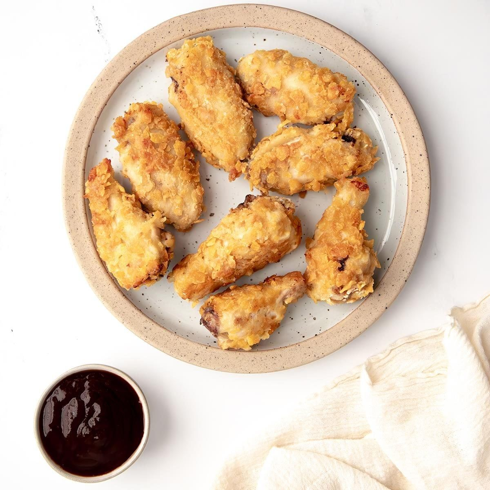

Corn Flake Chicken

- Meal
- Dinner
- Serves
- 6
- Protein
- chicken
- Cook
- oven · 20 min active / 50 min total · easy
- Make-ahead / leftovers
- no / yes
- Mediterranean
- no
- WW tier
- moderate
- Status
- Approved (in rotation)
Ingredients
- 6 boneless skinless chicken breast halves
- 3 cups crushed corn flakes (~6 cups whole)
- 3/4 cup all-purpose flour
- 1-1/2 tsp seasoned salt
- 3 large eggs, beaten (source uses 1 cup egg substitute)
- 1/4 cup butter, melted
Method
- Preheat 350°. Coat a 13x9 baking dish with some of the melted butter.
- Mix corn flakes, flour, seasoned salt in a shallow dish; beaten eggs in another.
- Dip chicken in egg, press into corn flake mixture to coat. Place in dish; drizzle remaining butter over top.
- Bake uncovered 20 min; flip; bake 10-15 min more to 170-175° internal.
Notes
- 2026-07-19: captured from a Taste of Home link — verify quantities against the page on first cook (site blocked full extraction; these are the standard published amounts). The earlier from-memory version was wrong (never made 7/11).
- Convection oven: check early — see the teriyaki salmon lesson (2026-07-19 ledger).
- Same coating powers Corn Flake Fish.